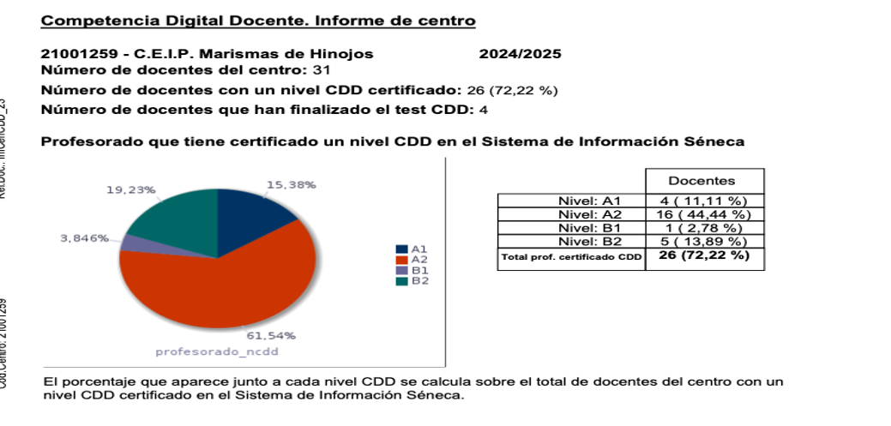
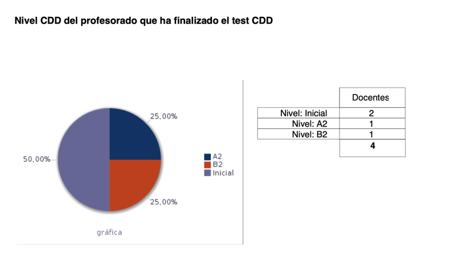
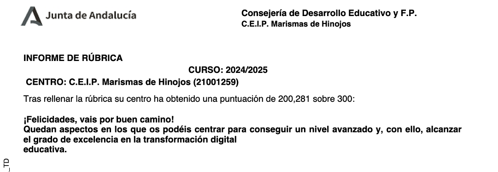

1.- Introducción.
2.- Informe de Competencia digital docente del claustro 2024-25.
3.- Informe de la Rúbrica TDE
3.- Desarrollo del TDE desde el ámbito de la organización de centro.
4.- Desarrollo del TDE desde el ámbito de la información y comunicación.
5.- Desarrollo del TDE desde el ámbito de los procesos de enseñanza-aprendizaje.
1.- INTRODUCCIÓN:
Este curso desde el proceso de TDE vamos a abordar los 3 ámbitos de desarrollo para conseguir afianzar 2 primeros y reforzar el ámbito de los procesos de enseñanza aprendizaje , Partimos de la Rúbrica del curso 2024-25, de los resultados de los test CDD y de la acreditación del claustro en CDD , de los objetivos conseguidos en el curso anterior y de las propuestas de mejora de la comunidad educativa.
2.- INFORME DE COMPETENCIA DIGITAL DOCENTE DEL CLAUSTRO 2024-25
El proyecto TDE debe partir de un análisis del nivel de acreditación en Competencia digital del claustro y además se usa el Test de Competencia digital que disponemos en Séneca.
En éste gráfico se indican el nivel acreditado de CDD en el curso 24-25 y que sirve de base para el desarrollo del TDE:

Nivel del profesorado que ha realizado el TEST CDD

3.- INFORME DE RÚBRICA:

4.- ÁMBITO: ORGANIZACIÓN DEL CENTRO
1.- Prácticamente todas las materias impartidas disponen de un espacio en una plataforma virtual de aprendizaje (plataforma educativa) o utiliza otros medios digitales (blogs educativos o sites), que permiten la interacción.
2.- Hay al menos un espacio físico en el centro que permite optimizar el uso de tecnologías de aprendizaje digital (mobiliario desplazable, ordenadores u otro equipamiento informático, o hay espacios diferenciados según su función).
3.- Prácticamente todo el profesorado tiene un horario que favorece el desarrollo adecuado de la competencia digital.
4.- La información sobre horarios está disponible en formato digital y accesible para el profesorado desde los ordenadores del centro.
5.- No existe guía sobre uso responsable de los equipos y dispositivos ni sistema de préstamo en caso de necesidad ,o solo está disponible en soporte papel, incluyendo al menos buenas prácticas para la prolongación de vida útil de los dispositivos.
6.- + La gestión de la reserva de los espacios físicos y recursos se realiza a través de una aplicación informática accesible desde cualquier dispositivo, a través de Internet.
+ Las incidencias y mantenimiento se reportan a través de aplicación informática accesible por red de centro.
+ Existe un protocolo en el centro para verificar que todo el alumnado posee los medios adecuados para continuar el proceso de enseñanza - aprendizaje de manera online en el caso que fuese necesario pero no contempla todos los aspectos: identificación del necesidades, sistema de préstamo, conectividad y documentación ad-hoc.
+ El coste de mantenimiento aparece como gasto específico en los presupuestos anuales.
7.- * Existe un plan de formación para el desarrollo de la competencia digital en el Plan de Centro que incluye acciones formativas para el profesorado, personal no docente y familias.
* La práctica totalidad del profesorado y personal no docente participa en las actividades formativas relacionadas con la competencia digital.
* El órgano de coordinación docente correspondiente (ETCP, DFEIE, DOFEIE, etc.) habitualmente es consultado y participa en la formación.
8.- . + En el Plan de Centro y en el Plan de Formación se contemplan acciones coordinadas encaminadas a la innovación metodológica apoyadas por el uso de las tecnologías.
+ No se participa en Proyectos de Innovación, Investigación y Elaboración de materiales didácticos.
+ El órgano de coordinación docente correspondiente (ETCP, DFEIE, DOFEIE, etc) dinamiza y extiende ocasionalmente la implementación de proyectos innovadores entre el claustro
+ El centro NO participa con otras organizaciones en proyectos de innovación.
+ El centro NO organiza aunque participa en actividades y eventos de intercambio de conocimiento que impulsen la innovación educativa. Menos de la mitad del profesorado y alumnado accede y/o participa en comunidades educativas en red (Internet en el aula, Brainly, Leoteca. etc).
9.-* Prácticamente la totalidad del profesorado usa el cuaderno del profesorado de Séneca además del registro de ausencias y calificaciones trimestrales.
* Se conoce la existencia del sobre virtual de matrícula y se aplica o se tiene la intención de aplicarlo según esté disponible
* Se usan habitualmente las funcionalidades de Séneca (mensajería, observaciones compartidas...).
10.- + La Rúbrica se ha cumplimentado con anterioridad y se mantiene actualizada.
+ Se han utilizado los datos de la Rúbrica para orientar la elaboración del Plan de Actuación.
+ El profesorado ha cumplimentado el test de CDD implementado en Séneca y dispone del Informe de Centro.
Las líneas de actuación relativas al ámbito de organización del centro son las 3 siguientes:
1.- Usar la plataforma Moodle centro como recurso más, integrado en las Sd Aprendizaje del centro y establecer un modelo de la misma aprovechable de un curso a otro, aulas por niveles en los más pequeños (1º a 3º) y por área y nivel en los más grandes (4º a 6º).
2.- Publicar al profesorado los horarios mediante recursos compartidos y establecer un formulario para recoger las incidencias de los medios técnicos y del protocolo de brecha digital. Fomentar la colaboración en red y compartir las SDA en los repositorios de Seneca . Presentar redes de colaboración docente .
3.- Elaborar, dar a conocer el Plan de actuación Digital y consensuar modificaciones del mismo. Así como desarrollar actividades formativas de las herramientas digitales de la consejería.
5.- ÁMBITO: INFORMACIÓN Y COMUNICACIÓN.
11.- * El centro dispone de web actualizada O blogs educativos en los que podría participar el alumnado.
* El centro participa en las redes sociales con cuentas corporativas ocasionalmente. * La comunidad educativa no participa o lo hace escasamente en los medios digitales de difusión del centro.
* La figura de Community Manager (CM) es unipersonal.
* NO se han establecido criterios ni normas para la publicación de contenidos en las redes sociales del centro.
12.- El centro participa de forma habitual en las redes sociales publicando los logros del alumnado.
13.- + Los documentos obligatorios o relevantes para el centro están digitalizados y son accesibles al profesorado a través de la red del centro.
+ Pueden descargarse los documentos para su cumplimentación.
+ Los datos agregados correspondientes al análisis de los resultados de las evaluaciones están accesibles para el profesorado en la red del centro .
+ Los resultados individuales de las evaluaciones del alumnado se validan para que estén accesibles en Pasen e iPasen, utilizándose soporte papel sólo cuando la persona receptora así lo exprese.
14.- * Menos de la mitad del profesorado utiliza medios y canales digitales variados para establecer con su alumnado comunicaciones relacionadas con el aprendizaje. * Las familias acceden con frecuencia y eficacia a la información proporcionada por los canales digitales, estableciendo una comunicación efectiva con el profesorado.
* Menos de la mitad de las comunicaciones internas entre el profesorado se realiza a través de las funcionalidades de Séneca.
15.- + El centro no organiza ni participa en actividades de intercambio de experiencias relacionadas con la transformación digital en sus tres ámbitos.
+ La participación de la comunidad educativa del centro es significativa.
16. La Interacción con Plataformas Digitales externas a la Comunidad Educativa se produce ocasionalmente.
17.- La práctica totalidad de la comunidad educativa utiliza iPasen e iSéneca. Se usan con frecuencia otros sistemas digitales complementarios para la comunicación con las familias (videoconferencias, videollamadas).
18.- La comunidad es informada y consultada sobre actuaciones y documentos relevantes del centro por medios telemáticos.
Las líneas de actuación relativas al ámbito de información y comunicación son las 3 siguientes:
4.- Reforzar la presencia y comunicación digital del centro, usando web Averroes, séneca, video tutoriales para formar a las familias. Hacer públicos los documentos de funcionamiento del centro. Potenciar las redes sociales del centro.
5.- Seguir abriendo medios para la participación en la organización y gestión del centro de la comunidad educativa. Continuar con la creación de materiales de formación y su difusión en la comunidad educativa centralizándolo, en un futuro, en la web del colegio, de forma que sea accesible.
6.- Continuar formando en las funcionalidades de Ipasen y de la secretaria virtual. Ayudar a la comunidad educativa a formarse en el uso de ISéneca y de la secretaria virtual para gestiones administrativas
6.- ÁMBITO: PROCESOS DE ENSEÑANZA-APRENDIZAJE.
19.- Más de la mitad del profesorado del centro adopta y promueve el uso de metodologías activas centradas en el alumnado como protagonista de su propio aprendizaje: ABP, aprendizaje cooperativo, aprendizaje basado en la indagación, Flipped Learning , pensamiento computacional , etc. El profesorado conoce un escaso número de estas metodologías y las aplica de manera arbitraria. Se trabaja con tareas integradas competenciales ocasionalmente.
20.- La práctica totalidad del profesorado del centro utiliza estrategias didácticas facilitadas por lastecnologías, flexibles, atractivas y que tienen en cuenta las expectativas e intereses del alumnado. Se combina con metodologías activas habitualmente.
21.- No es significativo el uso de recursos digitales online preferentemente cooperativos: presentaciones online (24) de manera cooperativa, mapas conceptuales (25), murales digitales (26), tablones digitales (27), infografías (28), etc.
Menos de la mitad del profesorado del centro elabora e implementa situaciones de aprendizaje que integran contenidos digitales de elaboración propia de calidad (22), libros de texto digitales, REA (23), blogs didácticos.
22.- . Menos de la mitad del profesorado del centro conoce y usa eXeLearning para elaborar REA. El profesorado hace uso de REA ocasionalmente, ya sea de elaboración propia u obtenido desde los repositorios oficiales que garantizan su calidad. El profesorado accede con frecuencia a repositorios para obtener recursos de diferente tipo (buscador de recursos de eAprendizaje (33), Banco de Recursos de Alejandría, Agrega (34), Procomún (35), web de centro, sitios webs docentes, etc.).
23.- Se hace al alumnado una oferta limitada de formas de representación. Se hace al alumnado una oferta limitada de formas de acción y expresión para que respondan o demuestren sus conocimientos y habilidades. Se proporciona al alumnado múltiples formas de implicación que mantengan su motivación y participación
24 .- Menos de la mitad del profesorado del centro integra en las programaciones contenidos relativos al comportamiento responsable en entornos en línea (normas de propiedad intelectual y de copyright), tipos de licencia CC (32), uso de banco de imágenes libres de copyright (36), etc.
25.- . Las áreas y competencias de la CD en sus diferentes marcos son conocidas por una parte significativa de la comunidad educativa.
26.- Menos de la mitad del profesorado del centro desarrolla y evalúa la competencia digital delalumnado a través de los contenidos de las ámbitos/áreas/materias impartidos.
27.- La práctica totalidad del profesorado del centro promueve la autoevaluación y la evaluación entre iguales mediante el uso habitual de portfolios de evaluación y otras tecnologías de aprendizaje digital (cuestionarios online, aplicaciones de valoración, rúbricas), fomentando el aprendizaje competencial.
28.- La práctica totalidad del profesorado del centro promueve en el alumnado mostrar empatía, tomar decisiones responsables en el ámbito digital y los valores solidarios como parte de la ciudadanía digital.
29.- Menos de la mitad del profesorado del centro fomenta en el alumnado el rol de diseñador de suproceso de enseñanza aprendizaje, ofreciendo opciones diferentes para la realización de tareas, profundización o refuerzo de los aprendizajes.
30.- Menos de la mitad del profesorado del centro promueve el trabajo cooperativo y colaborativo en línea(NetWorking) e informa/fomenta las opciones de asociación en el alumnado.
Las líneas de actuación relativas al ámbito de procesos de enseñanza -aprendizaje son las 3 siguientes:
7. -Recopilación , clasificación y modificación de distintos recursos digitales para la práctica Docente en distintos formatos. Trabajo de búsqueda , clasificación y modificación, adaptándolos a las características del centro de recursos digitales( rea, s. aprendizaje modificadas al centro, modelos aplicables).
8.- Potenciar los recursos digitales que permitan coevaluación , autoevaluación y la valoración crítica. Desarrollar estrategias que nos permitan mejorar y desarrollar en clase instrumentos para que el alumnado participe en su proceso de evaluación
9.- Presentación de enfoques metodológicos relacionados con el uso integrado de las Tic en las Situaciones de Aprendizaje (Comp. Digital Docente y del alumnado).